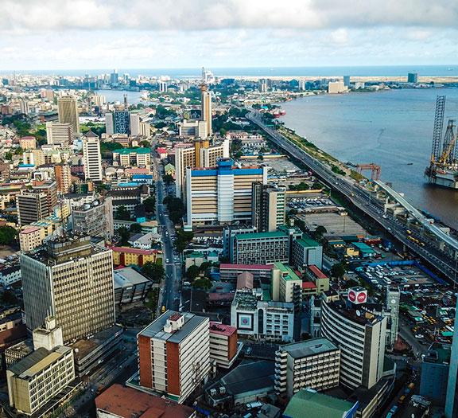

Folake Folarin Akinduro
About Me
My name is Folake Folarin Akinduro. I am a BYU-Pathway student currently studying Software Development. I enjoy learning new skills, solving problems, and discovering how technology can make everyday tasks easier.
I look forward to developing my web design and programming skills through this course.
My Country: Nigeria
Nigeria is a country in West Africa known for its rich culture, diverse languages, delicious food, and welcoming people. Its largest city is Lagos, an important centre for business and entertainment.
Nigeria is home to beautiful landscapes, lively markets, and many different cultural traditions.
